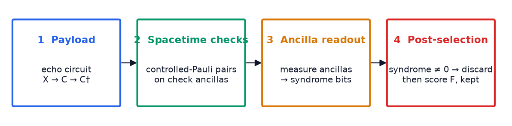
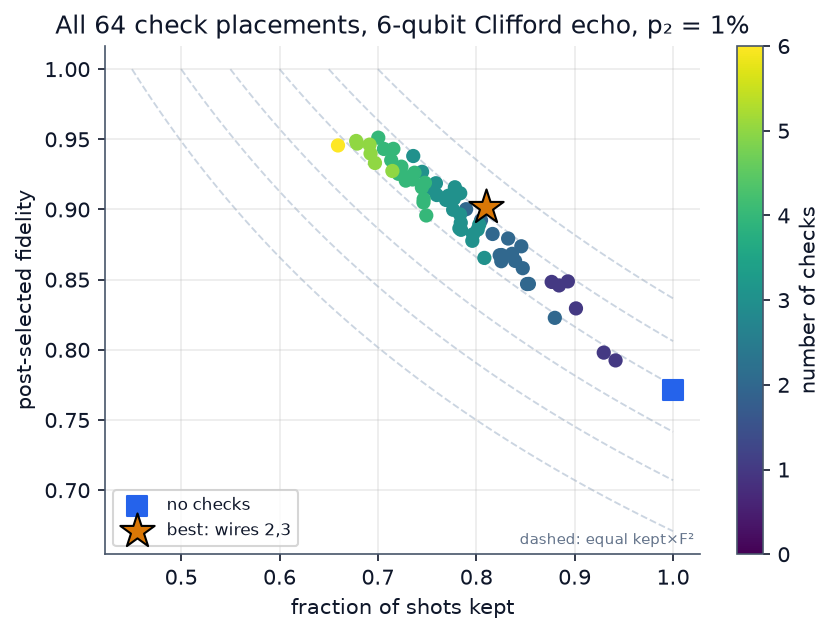
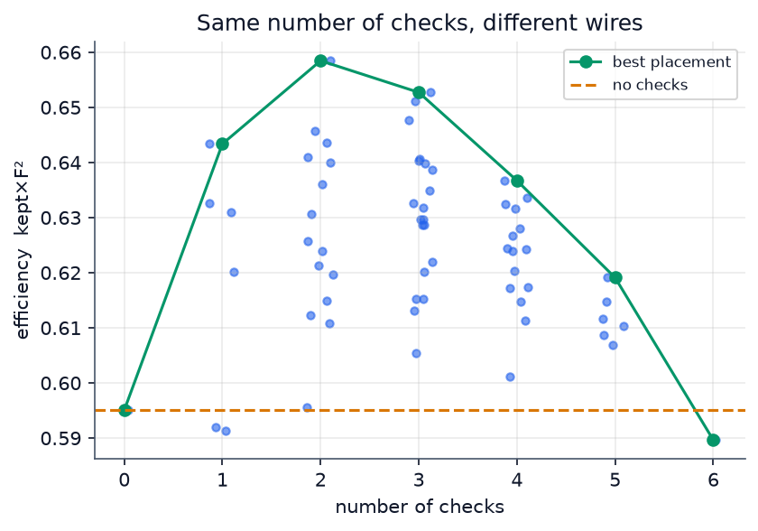
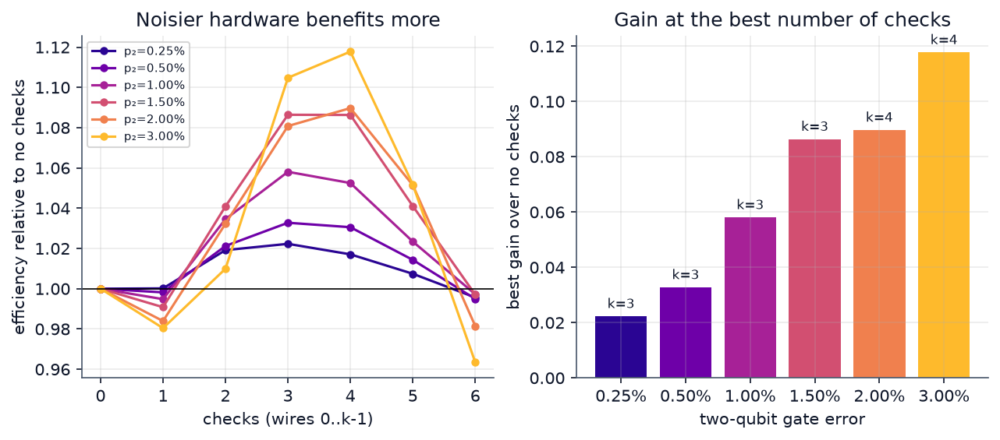
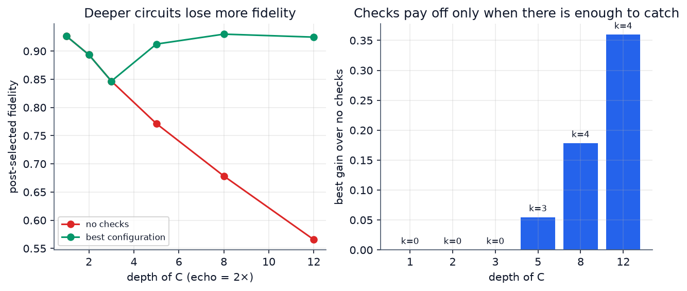
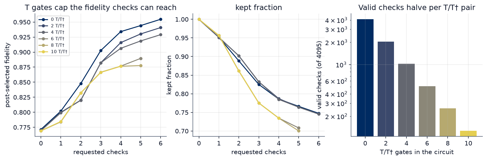
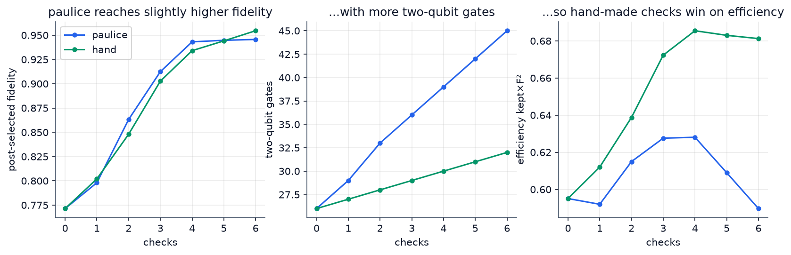

qiskit-paulice, ancilla readout, post-selection) on the Aer simulator, and the score is computed from the
resulting fidelity and kept-shot fraction. On the standard noise model (1% two-qubit gate error) the best placement
raises the post-selected fidelity from 0.771 to 0.902 while keeping 81.0% of shots, a +10.7% gain in
shot efficiency (kept×F²). The trade-off is not obvious: the best placement of two checks
beats the worst by 10%, using all six wires is no better than using none, a shallow circuit is best left unprotected,
and every T/T† pair halves the pool of valid checks.Quantum error detection flags the errors its ancilla checks can see and discards those shots; errors the checks do not cover go through. It repairs nothing. This differs from error mitigation (correcting an estimate in post-processing at the cost of more circuits) and from error correction (encoding one logical qubit in many physical qubits and decoding while the computation runs). The game is built entirely around detection: “low-overhead error detection with spacetime codes”. A discarded shot is the price of a caught error, which gives the game its trade-off.

A 6-qubit echo circuit: encode the bitstring 010101, apply a random brickwork Clifford C (5 layers; gates h, s, sx, cx), then C†. The ideal output is a single known bitstring, so any deviation is noise. (A bare random Clifford spreads its output uniformly; a distribution fidelity then hides the noise: we measured F = 0.999 at 1% noise and discarded that design.) Width 6, depth 21 (22 transpiled), 26 CNOTs. T-doped family: m T gates in the middle of C and the matching T† in the mirror half, giving 2m = 0, 2, 4, 8 (up to 10) non-Clifford gates while the ideal output stays the same bitstring, so fidelity is comparable across T counts and T gates affect which checks are valid.
Ideal distribution: stabilizer simulation for the Clifford circuit (StabilizerState), statevector simulation for T-doped circuits.
Fidelity: classical Hellinger fidelity F = (Σx√(pxqx))² between the data-bit distribution and the ideal.
Because the ideal is one bitstring, F is the probability of the right answer, and the formula handles the T-doped case unchanged.
Uncertainty: bootstrap, 100 resamples of the kept counts; 20 000 shots per configuration. A post-selected fidelity is always reported with its kept fraction.
Clifford payload: add_pauli_checks from qiskit-paulice v0.2.1, one check per target wire chosen by the player (cost = “gamma”, the inverse-channel overhead of the noise the checks miss).
T-doped payload: paulice accepts Cliffords only (we confirm it raises an error), so checks are hand-made. A spacetime check is a pair (L, R) with U L U† = ±R; the ancilla (|+⟩) controls L before and R after the payload and is read in X.
Across a T gate the check is valid only if its Pauli is I or Z there, because T is diagonal and commutes with Z but maps X to (X+Y)/√2. We enumerate all 46−1 left Paulis, propagate each with Clifford segments, and keep valid ones; each target wire then gets the cheapest valid, independent check that commutes with the previous ones
(anticommuting checks disturb each other even without noise: a bug our noiseless self-test caught). The pool shrinks as 4095 → 2047 → 1023 → 255 → 127 for 0, 2, 4, 8, 10 non-Clifford gates.
The brief's example model, used for both paulice (to place checks) and Aer (to simulate): every CNOT suffers a Pauli error of total probability p2 = 1% spread uniformly over the 15 non-identity two-qubit Paulis, and every measurement flips with probability 0.5%. Single-qubit gates, including T, are noiseless (as in paulice’s own model).
All controlled-Pauli gates of every check are built from the same noisy CNOT, so checks pay for their own gates. If the organizers publish another model it is a one-line change (P2_DEFAULT).
For each configuration we record fidelity without and with checks, kept fraction, ancillas, two-qubit gates and depth. We define efficiency = kept × F²: to estimate an observable damped by about F the variance scales as 1/(kept·N·F²), so this is the inverse of the raw shots needed for a fixed precision. It is a modelling choice (stated in the game); fidelity and kept fraction are always shown separately.


| Configuration (Clifford, p2=1%) | F post | kept | efficiency | ancillas | CNOTs | depth |
|---|---|---|---|---|---|---|
| no checks | 0.771 | 100% | 0.595 | 0 | 26 | 22 |
| best: checks on wires 2, 3 | 0.902 | 81.0% | 0.658 (+10.7%) | 2 | 31 | 39 |
| worst two-check placement (wires 0, 5) | 0.823 | 88.0% | 0.596 (+0.1%) | 2 | 31 | 36 |
| three checks on wires 0,1,2 (prefix) | 0.910 | 76.0% | 0.630 (+5.9%) | 3 | 36 | 49 |
| checks on all six wires | 0.946 | 65.9% | 0.590 (−0.8%) | 6 | 45 | 55 |
Why the best configuration wins. The numbers show the mechanism, even though we did not instrument which errors each check catches: fidelity after post-selection keeps rising with every check, but the fidelity of all shots falls (0.771 → 0.681 at six checks) because each check adds noisy CNOTs, and kept shots fall steadily. Efficiency therefore peaks at 2–3 checks and is back at baseline with six. Placement matters because checks on different wires cover different parts of the circuit; we suspect overlapping coverage is what makes the worst pair (wires 0 and 5) add almost nothing, but we have not tested that. Seed-to-seed repeatability (5 simulator seeds, no checks / four checks): efficiency 0.5938±0.0007 and 0.6289±0.0026, so the differences above are real.

The gain from checks grows with noise, from +2.2% at p2=0.25% to +11.8% at 3%, and the best number of checks rises from 3 to 4. Depth matters even more:


| non-Clifford gates | 0 | 2 | 4 | 8 |
|---|---|---|---|---|
| valid left Paulis (of 4095) | 4095 | 2047 | 1023 | 255 |
| F post, 4 checks (wires 0–3) | 0.934 | 0.916 | 0.906 | 0.876 |
| best efficiency (best number of checks) | 0.685 (4) | 0.661 (5) | 0.648 (3) | 0.597 (2) |
Answer to the brief’s question. Comparing a Clifford-only circuit with its T-doped versions: T gates do not change the unprotected fidelity here (they are noiseless and mirrored), but they remove checks, so the protectable fraction shrinks and the best reachable trade-off gets worse with every T/T† pair. At 8 non-Clifford gates only 255 of 4095 left Paulis remain valid, four checks give F = 0.876 and the best configuration is barely above no checks (0.597 vs 0.592). Detection is cheap exactly when the circuit is Clifford.

With four checks paulice gives F = 0.943 using 39 CNOTs (efficiency 0.628); our cheapest-valid hand-made checks give 0.934 with 30 CNOTs (efficiency 0.685). paulice optimises coverage of undetected noise (its “gamma” falls from 1.78 to 1.11), not gate cost, and on this small echo circuit a cheap check set gets most of that coverage for fewer gates. We did not tune paulice’s options (method, cost="LER"), so this is a statement about default settings and this payload, not a general ranking. The game uses paulice on the Clifford levels (as the brief intends) and hand-made checks on T levels; cross-level comparisons of the two therefore mix methods, and 3.3 uses hand-made checks throughout for that reason.
Detect or Discard (streamlit run game/app.py): six levels, each a payload plus a noise setting plus an ancilla budget. The player ticks the wires to protect and presses Run on Qiskit. The board shows the circuit (T gates in orange) with a green band for every check. The game then shows fidelity, kept shots, cost, a score and stars, an explanation generated from the numbers, and the cloud of all placements with the player’s attempts.
| Game rule | Physics it encodes |
|---|---|
| Ticking a wire adds a check ancilla | A spacetime Pauli check (paulice on Clifford levels, hand-made across T gates) whose ancilla entangles with the data at start and end and is read in X |
| Flagged shots disappear | Post-selection on the syndrome: detection, not correction |
| Shots kept falls as you add checks | Every check adds noisy CNOTs; a non-trivial syndrome discards the shot |
| Ancilla budget | Qubits are the scarce resource |
| Score = 100 × efficiency / best possible under the budget | Inverse raw-shot cost for fixed precision; “best possible” is the maximum over all 64 placements, computed from Qiskit runs. Stars at 85%, 95%, 98.5% of the optimum |
| Level 2, Short Sprint (depth 2) | Best move = no check (3.2) |
| Level 3, Storm (2% noise) | Checks pay off more as noise grows (3.2) |
| Level 4, Deep Dive (depth 8) | Gain +24% (3.2) |
| Levels 5–6 (4 and 8 T/T†) | T gates restrict which checks are valid (3.3) |
The scores shown are table lookups of precomputed Qiskit runs (results/landscape.csv, 8 levels × 64 placements), with a toggle that re-runs the chosen placement live on Aer in a separate process; both give the same numbers up to the fixed seeds. Nothing is hand-set.
results/validity_noiseless.csv). The test caught one real bug (anticommuting checks); reviewing the noise model caught another (a controlled-Z that had bypassed the noise, which made hand-made checks look unfairly cheap).pip install -r requirements.txt · python src/run_experiments.py (about 5 minutes; writes results/*.csv) · jupyter nbconvert --execute notebook.ipynb (25 s) · streamlit run game/app.py.
Software: Python 3.13, Qiskit 2.5.2, Qiskit Aer 0.17.2, qiskit-paulice 0.2.1. All randomness is seeded.
References: Martiel & Javadi, spacetime codes for error detection (arXiv:2504.15725); qiskit-paulice documentation and tutorial; Litinski, “A Game of Surface Codes”, Quantum 3, 128 (2019).